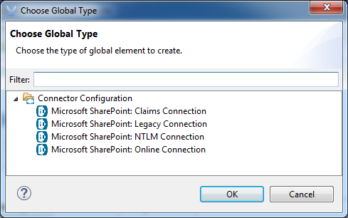
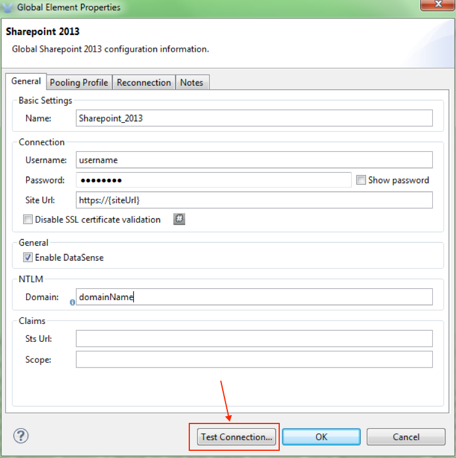
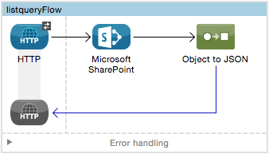
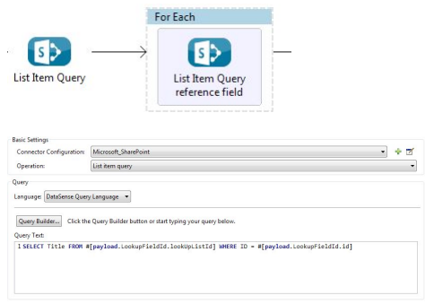

Microsoft SharePoint 2013 Connector
Select
Latest version: 2.3.0
Microsoft SharePoint is a web application platform for content and document management, intranet portals, collaboration, extranets, websites, and enterprise search.
The Microsoft SharePoint connector for Anypoint platform enables integration with SharePoint 2013 through its REST API.
Release Notes: Microsoft SharePoint 2013 Connector Release Notes
Samples: sharepoint-connector-samples.zip
Overview
Supported operations:
-
Lists and List Items API: Create, delete, retrieve, and update lists and list items.
-
Files and Folders API:
-
Files: Add, retrieve content, retrieve metadata, delete, check out, undo check out, check in, publish, unpublish, approve, deny, recycle, and copy files.
-
Folders: Create, delete, and retrieve folders.
-
Supported Microsoft SharePoint versions:
-
Microsoft SharePoint 2013
-
Microsoft SharePoint Online
-
FileQuery and FolderQuery operations are not supported when interacting with Sharepoint Online.
-
Authentication
The Microsoft SharePoint connector supports different authentication schemes based on which Microsoft SharePoint that you access:
Supported Microsoft SharePoint authentication on-premise:
-
NTLM
-
Claims-based authentication against Microsoft ADFS
-
Security token obtained from Microsoft ADFS
-
Unsupported authentication: Kerberos
Supported Microsoft SharePoint Online authentication:
-
Microsoft Online (Office 365) managed users
-
Microsoft Online (Office 365) federated users against Microsoft ADFS
-
Security token obtained from Microsoft Online
Claims-Based Authentication
Configuring the connector to use claims-based authentication requires the following information from the Security Token Service (STS) that to use for authenticating:
-
Sts Url: The STS endpoint that accepts username and password for authenticating users and understands the WS-Trust 1.3 protocol. When the STS is Microsoft’s ADFS (Active Directory Federation Services), this URL usually is
https://youradfs.com/adfs/services/trust/13/usernamemixed. -
Sts App Identifier: A string that identifies the Sharepoint site in the STS. It is also known as Relying Party Identifier, Client Identifier, Scope, or Realm. When the STS is Microsoft’s ADFS, this value can be discovered in the AD FS Management console under AD FS at Trust Relationships > Relying Party Trusts > (Sharepoint Site’s relying part properties) > Identifiers tab.
You can obtain the STS App Identifier by logging into the Sharepoint Site that you want to be accessed by opening the Site URL in a web browser. If there is more than one authentication provider configured for a site, a drop-down menu lists the options. Select the desired STS to be redirected to the STS’s login page. At this point, the address bar of the web browser contains a URL that includes the following query parameters:
wa=wsignin1.0&wtrealm=uri%3amule%3asp80The parameter wa tells the STS that a signin is being initiated. The wtrealm contains the URI-encoded value for the Sts App Identifier. In the example,
uri%3amule%3asp80isuri:mule:sp80. The unencoded value is the parameter for the connector’s configuration.
Security Token Authentication
In cases where it is not possible to configure a connection depending on username and password, or when you need to authenticate using a custom Security Token Service (STS) (different from the supported ones), the Security Token Connection settings allow you to provide the security token that you obtained from your custom STS. This configuration requires you that you set up the following information to use for authenticating:
-
Security Token: (Optional) A string containing the security token (that is, a full XML document) obtained from your STS to authenticate the connection with your Sharepoint instance. If you don’t configure the security token in this setting, you need to provide a
Security Token Provideras defined in the advanced section’s setting detailed below. -
Instance Type: Indicates if the connector should authenticate to an on-premises or an on-line instance as each one provides different endpoints and methods to attach the security token and authenticate the connection.
In addition to the basic configuration shown above, there is an advanced setting where you can provide a Security Token Provider instance of your own. This mechanism allows you to obtain the security token using a custom implementation and allows the connector refreshing the connection when the token has expired (which is not the case for when just providing the Security Token as XML document).
-
Security Token Provider: (Optional) A string that references to a Spring bean which should be a class that implements the
org.mule.module.sharepoint.connection.providers.SecurityTokenProviderinterface. Within the implementation you are responsible of providing a security token each time the connector requests one. In order to provide a reference to your own implementation as a Spring bean, refer to the following documentation.
Install and Configure
To install a connector, see Installing a Connector from Anypoint Exchange.
Configuring Your First Flow
To configure:
-
In Anypoint Studio, click File > New > Mule Project.
-
Specify a Project Name and click Finish.
-
Click the Global Elements tab.
-
Click Create.
-
In the Search text box, type sharepont.
-
Click Microsoft SharePoint and click OK.
-
Choose the Global Type to configure:
 -
Legacy Connection:
-
Fill in the Username, Password, and Site URL.
-
For authentication:
-
If using a self-signed SSL certificate, and click the Disable SSL certificate validation checkbox.
-
To connect with Claims Authentication, fill in STS URL (Security Token Service) and scope (Relying Party Identifier). The STS URL has to point to the endpoint of the STS that accepts username and password as authentication credentials and understands WS-Trust 1.3 standard. In ADFS, the endpoint is usually
https://myadfs.com/adfs/services/trust/13/usernamemixed. Also, the endpoint has to be enabled in ADFS (it is enabled by default). -
To connect with NTLM Authentication, fill in Domain.
-
To connect to SharePoint Online, leave NTLM and Claims inputs empty. Just specify a Username, Password, and Site URL.
-
-
-
Click Test Connection to ensure the connection works correctly:

The other connection types require similar information.
Note: The Pooling Profile, Reconnection, and Notes tabs can be ignored. These are provided by Studio and contain default information.
Creating an Anypoint Studio Flow
To create an Anypoint Studio flow:
-
From Anypoint Studio, click File > New > Mule Project.
-
Specify a Project Name and click Finish.
-
In the Search box, type http and drag an HTTP Connector to the canvas.
-
In the Search box, type sharepoint and drag a Microsoft SharePoint connector instance next to the HTTP connector.
-
In the Search box, type json and drag an Object to JSON transformer next to the Microsoft SharePoint connector.
 -
Double-click the HTTP connector. Make sure Host is set to localhost and Port is set to 8081. Set the Path to query. Click OK.
-
Double-click the Microsoft SharePoint connector and click the green plus symbol.
-
Update the following configuration values:
-
From the Connector Configuration list, click the Microsoft SharePoint configuration that was previously created.
-
From the Operation list, click List query.
Note: The List query option only appears in the Operation list after you have successfully connected to a SharePoint instance. -
From the Language list, click DataSense Query Language.
-
-
Click Query Builder:
-
From the list of Types, click Documents.
-
From the list of Fields, click ID, and Title.
-
From Order By, click Title.
-
From Direction, click DESCENDING
image::microsoft-sharepoint/msspquerybuilder.png[MSSPQueryBuilder]
-
Running the Flow
-
In Package Explorer, right click on sharepoint2013-demo and select Run As > Mule Application.
-
Check the console to see when the application starts. You should see the following message if no errors occurred:
++++++++++++++++++++++++++++++++++++++++++++++++++++++++++++ + Started app 'sharepoint2013-demo' + ++++++++++++++++++++++++++++++++++++++++++++++++++++++++++++ -
Open an Internet browser and visit http://localhost:8081/query
-
The list of documents are ordered by descending title and returns in JSON format (results vary according to your SharePoint 2013 instance).
[{"__metadata":{"id":"Web/Lists(guid'2af685ae-5aec-4f60-b175-
54b21b6bd668')/Items(4)","uri":"https://ec2-54-200-49-206.us-west-
2.compute.amazonaws.com/_api/Web/Lists(guid'2af685ae-5aec-4f60-b175-
54b21b6bd668')/Items(4)","etag":"\"1\"","type":"SP.Data.Shared_x0020_Document
sItem"},"Id":4,"ID":4,"Title":"folder"}]Operations: Lists and List Items API
Use the Lists and List Items API to create, retrieve, update, and delete SharePoint lists and list items.
Creating, Updating, and Deleting List Items
When creating or updating an item, specify the list ID. After you specify an ID, DataSense fetches the list’s metadata and the object builder shows each field that can be completed:
<sharepoint-2013:list-create config-ref="Sharepoint_2013" doc:name="Sharepoint 2013" baseTemplate="GENERIC_LIST" title="Title"> <sharepoint-2013:list ref="#[payload]"/> </sharepoint-2013:list-create>Or define the attributes in the connector itself:
<sharepoint-2013:list-create config-ref="Sharepoint_2013" doc:name="Sharepoint 2013" baseTemplate="GENERIC_LIST" title="Title"> <sharepoint-2013:list contentTypesEnabled="true" description="Description"/> </sharepoint-2013:list-create>For retrieving and deleting lists, only the list ID is necessary:
<sharepoint-2013:list-delete config-ref="Sharepoint_2013" doc:name="Sharepoint 2013" listId="8e306633-c600-40ab-80db-80f57968c0a1" />Creating, Updating, and Deleting List Items
When creating or updating an item, specify a list ID. DataSense uses the list ID to fetch a list’s metadata. The Object Builder provides the fields you need to complete.
Querying List Items
Using the query builder:
On the left panel, every not hidden list appears. On the right panel, the fields of the selected list appear. If the field is a Lookup Field, the field type is either SharepointListReference or SharepointListMultiValueReference.
If any of these fields are selected to be returned by the query, two types of return objects are available, depending on the value of the Retrieve full objects for reference fields checkbox:
-
not checked: A summary object containing the reference object’s ID and the reference object list’s ID:
{ "Title": "A title", "LookupFieldId": { "id": "1", "lookupListId": "aaaa-1111-bbbb-2222" }, "MultiValueLookupFieldId": { "ids": [ 1, 2, 3 ], "lookupListId": "cccc-3333-dddd-4444" } }This object can later be used in another connector to retrieve the referenced object together with a for-each component:
 -
checked. Retrieves the full object graph. In case there is a cycle, the summary reference object displays:
{ "Title": "A title", "LookupFieldId": { "Title": "Another title", "Id": "1", "Property1": "A value" }, "MultiValueLookupFieldId": [ { "Title": "Another title", "Id": "1", "Property1": "A value" }, { "Title": "Another title", "Id": "2", "Property1": "A value" } ] }
Example Query Text:
| Checking this option may cause large item lists with many reference fields to take a long time to retrieve. |
Since version 2.1.10 of this connector you can use the internal or title field names in DSQL queries (as well as in other list’s operations as detailed below).
For example for the previous query:
SELECT AuthorId, Created, List3MultiId FROM 8e306633-c600-40ab-80db-80f57968c0a1
If their titles are the following Author, Date created and Details respectively, then you can write the query the using field names:
SELECT Author, 'Date created', Details FROM Inventory
As well as you can mix internal and title too:
SELECT AuthorId, 'Date created', List3MultiId FROM Inventory
Using internal and/or title field names is supported within the following list’s operations ONLY:
-
Adding a new item to the list
-
Updating an existent item in the list
-
Querying items in the list
| In order to filter by a datetime field type, you need to write the value using ISO8601 format when specified in a DSQL clause (for example, Created > 2000-01-01T00:00:00-03:00). |
Operations: File and Folder API
Using the File and Folder API allows you to create, retrieve, update, and delete files and folders, and also check in, check out, publish, approve, deny, copy, and recycle files from Documents Lists.
When using the folders operations, the server’s relative URL refers to where the folder is or will be. The URL can be in the format /site/docList/innerFolder or in docList/innerFolder format. In the second case, the site specified in the connector’s configuration site URL parameter is used.
When using the files operations, the file server relative URL refers to a folder server relative URL plus the filename: /site/docList/innerFolder/filename or docList/innerFolder/filename.
Creating and Deleting a Folder
You can create or delete a folder by specifying the server relative URL where the folder is or where you plan to create the folder.
The resulting flow looks:
<sharepoint-2013:folder-create config-ref="Sharepoint_2013"
url="/path/to/folder" doc:name="Sharepoint 2013"/>
<sharepoint-2013:folder-delete config-ref="Sharepoint_2013"
url="/path/to/folder" doc:name="Sharepoint 2013"/>Adding a File
A file can be uploaded by selecting a physical file or passing an input stream to the connector, and it’s uploaded to the specified server relative URL. For example, you can use this together with a File Connector to upload files to a list.
Using an input stream:
<sharepoint-2013:file-add config-ref="Sharepoint_2013"
fileServerRelativeUrl="/path/to/folder/filename"
fileContentStream-ref="#[payload]" overwrite="true"
doc:name="Sharepoint 2013"/>In order to upload large files you need to configure your Sharepoint and IIS servers:
-
Set 'Maximum Upload Size' to 2047MB (max) at SP management console for site.
-
Set connection timeout for IIS site to high value.
-
Set the 'Maximum Allowed Content Length' to 2147483647 for IIS app (at request filtering).
| The Sharepoint REST API (which the connector uses) supports uploading files up to 2GB. When working with large files it’s recommended to provide the system local path to the file (localFilePath parameter’s value) as it’s the most efficient way to upload it through the connector. |
Getting File Contents
The file content is returned as a byte array. For example, you can use this as an input of a File Connector to download files from a list:
<sharepoint-2013:file-get-content config-ref="Sharepoint_2013"
doc:name="Sharepoint 2013"
fileServerRelativeUrl="/path/to/folder/filename"/>Querying Files and Folders
This operation returns all the files and folders that match the specified criteria, starting from the specified folder.
Using the query builder:
-
On the left panel, a document list from the SharePoint instance appears. The selected instance is used as part of the starting path to query the files and folders.
-
On the right panel, for every document list, the same fields appear.
-
Additionally, you can specify an inner folder or folders in the Folder Path input, to use as the starting path.
-
When selecting the recursive checkbox, files and folders are searched recursively in every folder of the starting path.
To set query builder options:
Example:
sharepoint-2013:file-query config-ref="Sharepoint_2013" query="dsql:SELECT Author,ModifiedBy,Name,ServerRelativeUrl FROM #[header:inbound:documentListName]" recursive="true" doc:name="Sharepoint 2013"/>
<sharepoint-2013:folder-query config-ref="Sharepoint_2013" recursive="true" query="dsql:SELECT ItemCount,Name,ServerRelativeUrl FROM #[header:inbound:documentListName] WHERE ItemCount > 0" doc:name="Sharepoint 2013"/>Other File Operations
Approve, Check In, Check Out, Deny, Publish, Undo Checkout, and Unpublish, are all very similar to use. Specify the file URL, and in some, pass an additional comment as a parameter.
<sharepoint-2013:file-publish config-ref="Sharepoint_2013"
doc:name="Sharepoint 2013" fileServerRelativeUrl="" comment=""/>Setting File Metadata
You can get and set metadata on files that are uploaded to Document Libraries by using the Update List Item operation.
To set the properties of the file in the list, you must know the List Item Id. This can be retrieved using the deferred ListItemAllFields property.
The following flow illustrates how a File Add may chain directly to an Update List Item operation to upload a file to a list and set the metadata immediately after:
<flow name="sharepoint_demo_fileAddWithMetadata"
doc:name="sharepoint_demo_fileAddWithMetadata">
<http:inbound-endpoint exchange-pattern="request-response" host="localhost"
port="8081" path="upload" doc:name="HTTP"/>
<sharepoint:file-add config-ref="Sharepoint"
fileServerRelativeUrl="/Shared Documents/myfile.txt"
overwrite="true"
doc:name="Add file"/>
<sharepoint:resolve-object config-ref="Sharepoint"
doc:name="Get ListItemId of File"
url="#[payload.listItemAllFields.__deferred.uri]"/>
<sharepoint:list-item-update config-ref="Sharepoint" itemId="#[payload.Id]"
listId="ccbfaf65-b53e-48ac-be19-adf45192ecc3" doc:name="Set file properties">
<sharepoint:updated-properties>
<sharepoint:updated-property key="Title">Test title</sharepoint:updated-property>
</sharepoint:updated-properties>
</sharepoint:list-item-update>
<set-payload value="OK" doc:name="Set Payload"/>
</flow>Resolving Deferred Properties
For performance reasons, many SharePoint operations return a basic set of data for an entity along with one or more deferred property references you can use to retrieve additional detail or related objects.
You can use the generic Resolve object or Resolve collection operations to resolve the deferred property set to a single Map<string,object> or a List<Map<string,object>> and access this information in the flow.
For example, this technique gets the full set of fields of a SharePoint File object:
<sharepoint:resolve-object config-ref="SharePoint"
url="#[payload.listItemAllFields.__deferred.url]"
doc:name="Microsoft SharePoint" >
</sharepoint:resolve-object>Using the Mule Debugger or Logger component to log the payload, you can identify properties with a _deferred URL property.
Attaching a File to a List Item
To attach a file to a list item, use the ResolveObject operation as shown in this example:
<flow name="sp-testFlow2">
<http:listener config-ref="HTTP_Listener_Configuration" path="/at" doc:name="HTTP"/>
<set-variable variableName="FileNameToAttach" value="CHANGELOG.md" doc:name="Set FileNameToAttach"/>
<sharepoint:list-item-query config-ref="Microsoft_SharePoint__NTLM_Connection" query="dsql:SELECT ID,Title FROM 82b2a455-3faf-4162-8276-63a1093fcc7e WHERE Title = 'test-list-item-1'" doc:name="Read List Item"/>
<set-variable variableName="ListItemUrl" value="#[payload.next() .__metadata.uri]" doc:name="SetListItemUri from list item query result"/>
<set-payload value="#[groovy:new FileInputStream('C:\\temp\\' + flowVars.FileNameToAttach)]" doc:name="Set file to attach as inputstream in payload"/>
<sharepoint:resolve-object config-ref="Microsoft_SharePoint__NTLM_Connection" url="#[flowVars.ListItemUrl]/AttachmentFiles/add(FileName='#[flowVars.FileNameToAttach]')" resolveRequestType="Create" doc:name="create attachment"/>
<json:object-to-json-transformer doc:name="Object to JSON"/>
</flow>The flow shows how to:
-
Get the list item URI by reading it from SharePoint. If you already have the list item because it’s being created in the same flow, you can use that one.
-
Read a file into an input stream. Here it’s from c:\temp (find the path in the flow to replace it).
-
Create the list item attachment with the file.
Executing Direct Calls Against the REST API
SharePoint REST API allows a large number of commands that can be reached though Resolve object and Resolve collection actions. These operations provide an authenticated call to a specified URL, and resolves into a Map and a List<Map> respectively.
The Resolve object operation accepts all the HTTP verbs (GET, POST, PUT/MERGE, DELETE) and allows sending a body in the request to the API. The body’s default value is the payload of the Mule message.
The body can be for API endpoints that accept a JSON:
-
Map<String, Object>that is converted to a JSON string. -
Stringcontaining the JSON. This string is sent as-is.
For API endpoints that accept a file:
-
InputStreamwith the file. The stream closes after using it. -
byte[]with the file. This byte arrays is sent as-is.
Working with Choice Column Type with Multiple Values
You can configure a Choice column type to allow multiple values. The metadata in Studio for columns accepting multiple values appears as follows:
Assuming that the target List in SharePoint has a Title property and a multi-select column called ChoiceMultiSelect that accepts values "one", "two", or "three", the following Groovy script constructs a payload that sets the selection to "one", "three":
[Title: "foo", ChoiceMultiSelect: [results: ["one", "three"]]]
Any language that can construct a List<string> for the multi-select column results property may be used to similar effect.
This block of pseudo code demonstrates how to set Choice #1 and Choice #2 as the values for the ChoiceMultiSelect column:
values = new List<String>
values.add("Choice #1")
values.add("Choice #2")
multiValuesMap = new Map<String, Object>
multiValuesMap["results"] = values
List-item["ChoiceMultiSelect"] = multiValuesMapException Handling
Frequently Asked Questions
Which versions of SharePoint are supported by this connector?
The SharePoint connector supports SharePoint 2013 on-premises, and SharePoint online versions.
What authentication schemes are supported by the connector?
Options for authentication against on-premises SharePoint instances include Claims Authentication (ADFS) and NTLM. For SharePoint Online, authentication using standard SharePoint online user credentials is supported.
What parts of the SharePoint object model are accessible by the connector?
Specific support for Files and Folders, Lists, ListItems and Attachments is offered. Additionally, all other entities of the SharePoint API are accessible in JSON form via the ResolveObject and ResolveCollection operations.
Is DataSense and DataMapper supported by this connector?
Yes, all supported entities and entity attributes are exposed to Studio by the connector for use with DataMapper.
What operations can I perform with the connector?
For the Lists and ListItems API, supported operations include Create, Retrieve, Update, and Delete. For Files and Folders, operations include Add, retrieve content, retrieve metadata, delete, check out, undo check out, check in, publish, unpublish, approve, deny, recycle, and copy.
Are there any examples that show how to use the connector?
Yes, an example project for Anypoint Studio is freely available in the sharepoint-connector-samples.zip.